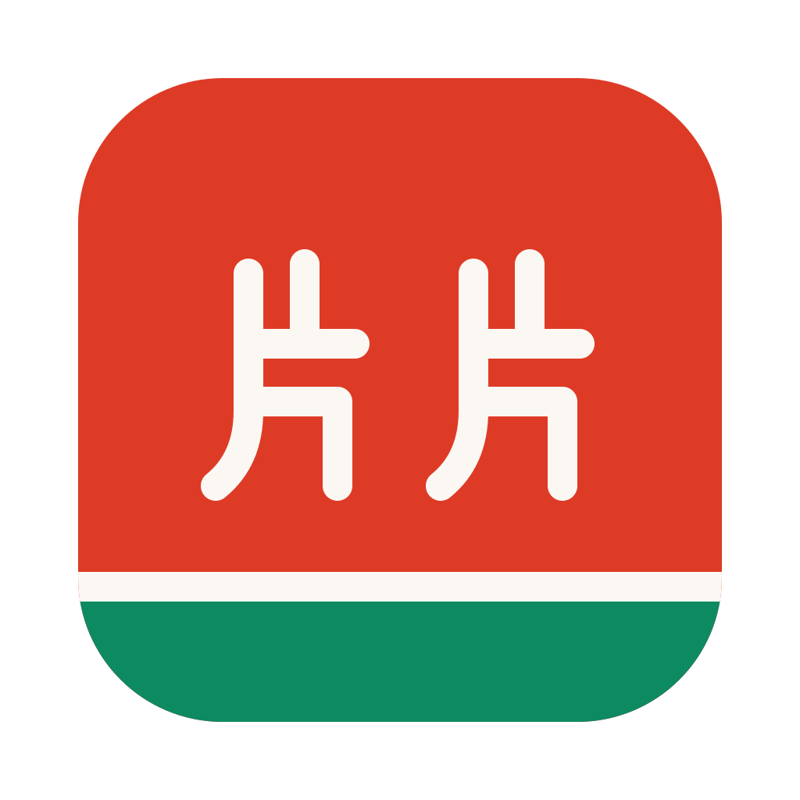

<!doctype html>
<html lang="en">
<head>
<meta charset="utf-8">
<meta name="viewport" content="width=device-width, initial-scale=1">
<title>Pianpian 片片</title>
<link rel="icon" href="design/icons/20-pianpian-watermelon.svg">
<link rel="preload" as="style" href="https://fonts.googleapis.com/css2?family=Bricolage+Grotesque:opsz,wght@12..96,500..800&family=Archivo:wght@400..700&family=JetBrains+Mono:wght@400;600&display=swap" onload="this.rel='stylesheet'">
<script>(function(){try{var d=document.documentElement,t=localStorage.getItem("zh-kit-theme");if(t&&t!=="system")d.setAttribute("data-theme",t);
if((localStorage.getItem("pp-left")||localStorage.getItem("pp-side"))==="closed")d.classList.add("left-closed");if(localStorage.getItem("pp-right")==="closed")d.classList.add("right-closed");}catch(e){}})();</script>
<link rel="stylesheet" href="assets/kit.css">
<style>
/* one screen, like a desktop app: library panel on the left, the video in the middle, transcript panel on
   the right. Both panels are the same component (.panel + a fixed .ptoggle in its top corner).
   One 16px margin and one top row (12px + the 34px toggles + 12px): everything starts on the same lines. */
body { overflow:hidden; }
.shell { position:relative; display:grid; grid-template-columns:auto minmax(0,1fr) auto; height:100vh; overflow:hidden; }
.main { grid-column:2; overflow:auto; padding:58px 16px 30px; min-width:0; }
.gliding .main { overflow:visible; }                /* during a fold the content may pass outside it, under the panel */
.panel { display:flex; flex-direction:column; gap:12px; padding:12px 16px; overflow:auto; background:var(--bg);
  position:relative; z-index:5; will-change:transform; contain:paint; }   /* own layer, above the content gliding under it */
.panel > * { flex-shrink:0; }
.panel.left { grid-column:1; width:300px; border-right:1px solid var(--line); }
.panel.right { grid-column:3; width:340px; border-left:1px solid var(--line); }
.panelhead { display:flex; align-items:center; height:34px; }
.panel.left .panelhead { padding-left:44px; }        /* room for the fixed toggle */
.panel.right .panelhead { padding-right:44px; }
.panelhead h4 { margin:0; font:600 10px var(--mono); letter-spacing:.14em; text-transform:uppercase; color:var(--muted); }
/* folding: the panel leaves the layout at once and slides out on top like a solid drawer, while the video
   and its menus glide into the freed space (Kit.flip). Only transform and opacity animate, and only after
   the first paint, so a panel that starts folded doesn't animate shut on load. */
.left-closed .panel.left, .right-closed .panel.right { position:absolute; top:0; bottom:0; opacity:0; pointer-events:none; }
.left-closed .panel.left { left:0; transform:translateX(-100%); }
.right-closed .panel.right { right:0; transform:translateX(100%); }
.ready .panel { transition:transform .34s var(--ease), opacity .12s ease; }
.ready.left-closed .panel.left, .ready.right-closed .panel.right { transition:transform .34s var(--ease), opacity .14s ease .2s; }
.ptoggle { position:fixed; top:12px; z-index:10; width:34px; height:34px; display:grid; place-items:center; padding:0; cursor:pointer;
  border:1px solid var(--line-2); border-radius:10px; background:var(--surface); color:var(--fg-2); transition:border-color .16s ease, color .16s ease; }
.ptoggle.left { left:16px; } .ptoggle.right { right:16px; }
.ptoggle:hover { border-color:var(--red); color:var(--red-fg); }
.ptoggle svg { width:18px; height:18px; }
/* the transcript fills its panel */
.panel.right .transcript { flex:1 1 auto; min-height:0; max-height:none; border:0; border-radius:0; background:none; margin:0 -16px -12px; }
@media (max-width:900px) { body { overflow:auto; } .shell { grid-template-columns:1fr; height:auto; overflow:visible; }
  .panel.left, .panel.right { grid-column:1; width:auto; border:0; border-bottom:1px solid var(--line); }
  .panel.right { grid-row:3; max-height:50vh; } .main { grid-column:1; overflow:visible; }
  .left-closed .panel.left, .right-closed .panel.right { display:none; } }

.panel.left > .lib { flex-shrink:1; }
.panelhead .logo { display:block; }
.add { display:grid; gap:7px; }
.addrow { display:flex; gap:6px; }
.addrow .field { padding:8px 10px; }
.opts > summary { cursor:pointer; font:500 11px var(--mono); color:var(--muted); list-style:none; }
.opts > summary::-webkit-details-marker { display:none; }
.opts > summary::before { content:'▸ '; } .opts[open] > summary::before { content:'▾ '; }
.opts[open] { display:grid; gap:7px; }
.opts .check { align-items:flex-start; line-height:1.4; } .opts .check input { margin-top:2px; }   /* one line of text per option, wrapping as a block */
.msg { font-size:12.5px; color:var(--red-fg); }
.msg:empty { display:none; }
.job { padding:10px 12px; }
.job .top { display:flex; justify-content:space-between; gap:8px; align-items:center; }
.job .lbl { font-size:13px; font-weight:600; overflow:hidden; text-overflow:ellipsis; white-space:nowrap; }
.job .last { font:11.5px var(--mono); color:var(--muted); margin-top:6px; overflow:hidden; text-overflow:ellipsis; white-space:nowrap; }
.job .hint { margin-top:8px; font-size:12.5px; line-height:1.45; color:var(--fg-2); }
.upd { padding:10px 12px; display:grid; gap:8px; border-color:var(--red); }
.upd .top { display:flex; justify-content:space-between; align-items:center; font-size:13px; }
.upd .btn { padding:4px 10px; font-size:12px; }
.job .hint b { font:600 10.5px var(--mono); color:var(--red-fg); margin-right:4px; }
.job pre.log { margin-top:8px; max-height:220px; overflow:auto; font-size:11px; border-radius:var(--r-sm); white-space:pre-wrap; word-break:break-all; }

.libh { display:flex; justify-content:space-between; align-items:baseline; margin:4px 2px -4px; }
.libh h4 { margin:0; font:600 10px var(--mono); letter-spacing:.14em; text-transform:uppercase; color:var(--muted); }
.lib { display:grid; gap:4px; flex:1; align-content:start; }
.item { display:grid; grid-template-columns:72px minmax(0,1fr); gap:9px; align-items:center; text-align:left; width:100%; padding:6px; border:1px solid transparent; border-radius:var(--r-sm); background:none; cursor:pointer; }
.item:hover { background:var(--surface); border-color:var(--line); }
.item.on { background:var(--surface); border-color:var(--line-2); box-shadow:inset 3px 0 var(--red); }
.thumb { width:72px; aspect-ratio:16/9; border-radius:5px; background:var(--surface-2) center/cover no-repeat; border:1px solid var(--line); }
.item b { display:-webkit-box; -webkit-line-clamp:2; -webkit-box-orient:vertical; overflow:hidden; font-size:12.5px; line-height:1.3; font-weight:600; }
.item .chips { display:flex; flex-wrap:wrap; gap:3px; margin-top:4px; }
.item .pill { font-size:8.5px; padding:0 5px; }
.item .pill.lvl { background:var(--surface-2); color:var(--fg-2); border-color:var(--line-2); }
.sidefoot { display:flex; align-items:center; gap:8px; border-top:1px solid var(--line); padding-top:10px; }
.sidefoot .grow { flex:1; }
.sidefoot .ib { padding:4px 9px; font-size:11px; }

#notes .note { margin:0 0 8px; padding:7px 12px; font-size:13px; display:flex; flex-wrap:wrap; gap:8px; align-items:center; animation:pp-fade .3s ease; }
#notes .note .btn { padding:4px 10px; }
#vpanel { width:min(460px, 92vw); }
#vpanel textarea { min-height:90px; }
#vpanel ol { margin:0; padding-left:18px; display:grid; gap:8px; font-size:13px; color:var(--fg-2); }
#vpanel details > summary { cursor:pointer; font-size:13px; font-weight:600; }
</style>
</head>
<body>
<!-- the two panel toggles: fixed in the top corners, they never move -->
<button class="ptoggle left" data-panel="left" type="button" aria-controls="left" aria-expanded="true" title="Library (B)">
  <svg viewBox="0 0 24 24" fill="none" stroke="currentColor" stroke-width="1.8" stroke-linecap="round" stroke-linejoin="round" aria-hidden="true"><rect x="3" y="4" width="18" height="16" rx="3"/><path d="M9 4v16"/></svg>
</button>
<button class="ptoggle right" data-panel="right" type="button" aria-controls="right" aria-expanded="true" title="Transcript (T)">
  <svg viewBox="0 0 24 24" fill="none" stroke="currentColor" stroke-width="1.8" stroke-linecap="round" stroke-linejoin="round" aria-hidden="true"><rect x="3" y="4" width="18" height="16" rx="3"/><path d="M15 4v16"/></svg>
</button>
<div class="shell">
  <aside class="panel left" id="left">
    <div class="panelhead">
      
    </div>

    <form class="add" id="add" autocomplete="off">
      <div class="addrow">
        <input class="field" name="url" placeholder="Paste a Bilibili or YouTube link" spellcheck="false" required>
        <button class="btn primary" type="submit" title="download it and make the subtitles">Add</button>
      </div>
      <details class="opts"><summary>options</summary>
        <label class="check" title="Bilibili shows its AI subtitles only when you are logged in: pick the browser you use Bilibili in"><span>Bilibili login from</span>
          <select name="browser"><option value="">none</option></select></label>
        <label class="check"><input type="checkbox" name="translate" checked><span>English too <span class="muted">(local model, 1 GB the first time)</span></span></label>
      </details>
      <div class="msg" id="addmsg"></div>
    </form>

    <div class="card job" id="job" hidden>
      <div class="top"><span class="lbl" id="joblabel"></span><span class="pill" id="jobstate"></span></div>
      <div class="last" id="joblast"></div>
      <div class="hint" id="jobhint" hidden></div>
      <div class="row" style="margin-top:8px"><button class="mini" id="logbtn" type="button">log</button><span class="muted mono" style="font-size:11px" id="jobtime"></span>
        <span style="flex:1"></span><button class="mini" data-report type="button" hidden title="opens GitHub's bug form, filled in: you read it there before sending">report</button>
        <button class="mini" data-copyreport type="button" hidden title="copy the same details, to send another way">copy details</button></div>
      <button class="btn primary" id="ytdlpbtn" type="button" hidden style="margin-top:8px;padding:4px 10px;font-size:12px">Update the downloader</button>
      <pre class="log" id="joblog" hidden></pre>
    </div>

    <div class="card upd" id="upd" hidden>
      <div class="top"><b id="updtitle"></b><button class="mini" id="upddismiss" type="button" title="hide until the next version">×</button></div>
      <div class="row"><a class="btn primary" id="upddl" target="_blank" rel="noopener">Download</a><a class="btn" id="updnotes" target="_blank" rel="noopener">What's new ↗</a></div>
    </div>

    <div class="libh"><h4>Library</h4><span class="muted mono" style="font-size:10.5px" id="libinfo"></span></div>
    <div class="lib" id="lib"></div>

    <div class="sidefoot">
      <label class="ib" for="pick" title="play a video and its .srt files from disk, without adding them to the library">Open files…</label>
      <input id="pick" type="file" multiple hidden accept="video/*,audio/*,.srt,.vtt,.json,.mkv,.m4v">
      <span class="grow"></span>
      <span class="dot" id="status">checking…</span>
      <button class="ib" data-report type="button" title="report a problem: opens GitHub's bug form, filled in; nothing is sent until you press Submit there">Report</button>
      <button class="ib" data-theme-toggle type="button">Auto</button>
    </div>
  </aside>

  <main class="main" id="main">
    <div id="notes"></div>
    <div id="player"></div>
  </main>

  <aside class="panel right" id="right">
    <div class="panelhead"><h4>Transcript</h4></div>
    <div class="transcript" id="transcript"><div class="empty">The transcript appears here. Click a line to jump to it.</div></div>
  </aside>
</div>

<script src="assets/kit.js"></script>
<script src="assets/player.js"></script>
<script>
const $ = id => document.getElementById(id);
const esc = s => String(s).replace(/&/g, '&amp;').replace(/</g, '&lt;').replace(/"/g, '&quot;');
const OFFLINE = location.protocol === 'file:';     // opened from disk: no library, files only
// app.html?demo: the website's demo. The library is a snapshot in demo/ (tools/build_site.py writes it with
// the server's own code), and whatever needs the engine on a Mac points to the download instead
const DEMO = new URLSearchParams(location.search).has('demo');
const LIB = DEMO ? 'demo/library/' : '/library/';
const GET_APP = 'https://github.com/conradomateu/pianpian/releases/latest';
const DEMO_SAYS = 'This is the online demo. To make subtitles for your own videos, get the app for your Mac.';
const PROMPT = `Each line below is: an id, a TAB, then one subtitle in Chinese.
Translate the Chinese into natural English. Output EXACTLY the same ids, one per line, as: id<TAB>English.
Do not merge, split, drop or renumber lines. " / " marks a line break; keep it.
If you think the Chinese contains a speech-recognition or OCR error, translate what was probably meant and add [?] at the end of that line.

`;
const api = async (path, body) => {
  if (DEMO) {
    if (body !== undefined) { demoNote(); throw new Error(''); }   // the note says it; no second message
    if (path === '/api/jobs') return [];
    const r = await fetch('demo' + path + '.json');
    if (!r.ok) throw new Error(r.statusText);
    return r.json();
  }
  const r = await fetch(path, body === undefined ? {} : { method: 'POST', headers: { 'Content-Type': 'application/json', 'X-Kit': '1' }, body: JSON.stringify(body) });
  const j = await r.json().catch(() => ({}));
  if (!r.ok) throw new Error(j.error || r.statusText);
  return j;
};

const player = SubPlayer.mount($('player'), {
  hint: OFFLINE
    ? '<div><b>Drop a video and its subtitle files here</b>The server is off, so there is no library. Start it with <code>python3 ~/code/pianpian/server.py</code></div>'
    : '<div><b>Pick a video on the left, paste a link, or drop files here</b>A video plus its <code>.srt</code> files (and <code>zh.words.json</code>) play straight from disk.</div>',
  keys: ' · <b>B</b> library · <b>T</b> transcript',
  list: $('transcript'),
});
let videos = [], current = null, lastJobs = [];

/* ---------- the two panels: same component, one function (left = library, right = transcript) ---------- */
const isOpen = side => !document.documentElement.classList.contains(side + '-closed');
function setPanel(side, open, animate) {
  const apply = () => {
    document.documentElement.classList.toggle(side + '-closed', !open);
    document.querySelector(`.ptoggle[data-panel="${side}"]`).setAttribute('aria-expanded', open);
    try { localStorage.setItem('pp-' + side, open ? 'open' : 'closed'); } catch {}
  };
  // the note, the video and every menu button glide together into the space the panel frees or takes
  const gliding = [$('notes'), player.stage, ...document.querySelectorAll('.pbar > *, .pbar [data-extra] > *')];
  animate ? Kit.flip(gliding, apply, [player.stage]) : apply();
}
document.querySelectorAll('.ptoggle').forEach(b => b.onclick = () => setPanel(b.dataset.panel, !isOpen(b.dataset.panel), true));
document.addEventListener('keydown', e => {
  if (/INPUT|SELECT|TEXTAREA/.test(e.target.tagName) || e.metaKey || e.ctrlKey) return;
  const side = { b: 'left', t: 'right' }[e.key.toLowerCase()];
  if (side) setPanel(side, !isOpen(side), true);
});
let firstVisit = false;
try { firstVisit = !localStorage.getItem('pp-left'); } catch {}
setPanel('left', isOpen('left') && !(DEMO && firstVisit && innerWidth < 1100), false);   // a small demo frame: room for the video
setPanel('right', isOpen('right'), false);
setTimeout(() => document.documentElement.classList.add('ready'), 80);   // motion only after the first paint

/* ---------- the Video menu, next to Subtitles and Playback ---------- */
player.extra.innerHTML = '<details class="dd" data-dd id="vmenu" hidden><summary>Video</summary><div class="ddp" id="vpanel"></div></details>';

/* ---------- status ---------- */
async function status() {
  try {
    const s = await api('/api/status');
    const broken = s.engine === false;
    $('status').className = 'dot ' + (broken ? 'off' : s.busy ? 'busy' : 'ok');
    $('status').textContent = broken ? 'engine not installed' : s.busy ? 'working' : 'ready';
    const sel = $('add').browser;                     // the browsers this Mac has, the last choice remembered
    if (sel.options.length === 1 && s.browsers) {
      const NAMES = { safari: 'Safari', chrome: 'Chrome', brave: 'Brave', firefox: 'Firefox', edge: 'Edge', chromium: 'Chromium', opera: 'Opera', vivaldi: 'Vivaldi' };
      s.browsers.forEach(b => sel.add(new Option(NAMES[b] || b, b)));
      try { sel.value = localStorage.getItem('pp-browser') || ''; } catch {}
      sel.onchange = () => { try { localStorage.setItem('pp-browser', sel.value); } catch {} };
    }
    $('libinfo').textContent = DEMO ? 'demo' : s.library.replace(/^\/Users\/[^/]+/, '~');
    showUpdate(s.update);
    if (DEMO) { $('status').className = 'dot ok'; $('status').textContent = 'demo'; }
  } catch { $('status').className = 'dot off'; $('status').textContent = 'server stopped'; }
}

/* ---------- a new version: one quiet card, hidden for that version once dismissed ---------- */
function showUpdate(u) {
  let seen = ''; try { seen = localStorage.getItem('pp-update-seen') || ''; } catch {}
  $('upd').hidden = !u || u.version === seen;
  if (!u) return;
  $('updtitle').textContent = `Pianpian ${u.version} is out`;
  $('updnotes').href = u.url;
  $('upddl').href = u.download || u.url;
  $('upddismiss').onclick = () => { try { localStorage.setItem('pp-update-seen', u.version); } catch {} $('upd').hidden = true; };
}
$('ytdlpbtn').onclick = async () => {
  try { await api('/api/update-downloader', {}); poll(); } catch (err) { $('addmsg').textContent = err.message; }
};

/* ---------- library ---------- */
const CHIPS = [['zh', '中文'], ['pinyin', '拼音'], ['en', 'EN']];
const busyFor = id => lastJobs.some(j => j.video === id && (j.state === 'running' || j.state === 'queued'));
function chips(v) {
  if (v.kind === 'file') return '<span class="pill soon">no subtitles</span>';
  return (busyFor(v.id) ? '<span class="pill soon">working…</span>' : '') +
    CHIPS.map(([k, n]) => `<span class="pill ${v.has[k] ? 'yes' : ''}">${n}</span>`).join('') +
    (v.hsk ? `<span class="pill lvl" title="90% of its words are HSK ${v.hsk > 7 ? '7–9 or rarer' : v.hsk === 7 ? '7–9' : v.hsk + ' or easier'}">HSK ${v.hsk > 7 ? '7–9+' : v.hsk === 7 ? '7–9' : '≈' + v.hsk}</span>` : '');
}
async function loadLibrary() {
  videos = await api('/api/videos');
  $('lib').innerHTML = videos.length ? videos.map(v => `
    <button class="item ${current && current.id === v.id ? 'on' : ''}" data-id="${esc(v.id)}">
      <span class="thumb" style="${v.kind === 'folder' && v.video ? `background-image:url('${LIB}${encodeURIComponent(v.id)}/thumb.jpg')` : ''}"></span>
      <span><b>${esc(v.title)}</b><span class="chips">${chips(v)}</span></span>
    </button>`).join('') : '<p class="muted" style="font-size:13px;margin:4px">Nothing here yet. Paste a link above.</p>';
}
$('lib').onclick = e => { const b = e.target.closest('.item'); if (b) select(b.dataset.id); };

/* ---------- one video ---------- */
async function select(id, keepPlayer) {
  let v;
  try { v = await api('/api/videos/' + encodeURIComponent(id)); } catch { return; }
  const changed = !current || current.id !== v.id;
  current = v;
  if (hashId() !== id) history.replaceState(null, '', location.search + '#v=' + encodeURIComponent(id));
  document.querySelectorAll('.item').forEach(b => b.classList.toggle('on', b.dataset.id === id));
  document.title = v.title + ' · 片片';               // the title shows in the window and the library, not above the video
  renderNotes(v); renderMenu(v);
  if (changed || !keepPlayer) {
    const base = LIB + encodeURIComponent(v.id) + '/';
    const subs = await Promise.all((v.subs || []).map(async n => ({ name: n, text: await (await fetch(base + encodeURIComponent(n))).text() })));
    const words = v.words ? await (await fetch(base + v.words)).json().catch(() => null) : null;
    const align = v.align ? await (await fetch(base + v.align)).json().catch(() => null) : null;
    player.load({ video: v.video ? (v.kind === 'file' ? LIB + encodeURIComponent(v.id) : base + encodeURIComponent(v.video)) : null,
                  subs, words, align, id: v.id });
    const t = +((location.hash.match(/[#&]t=([\d.]+)/) || [])[1] || 0);      // #v=…&t=12.5 opens at that moment
    if (t) player.video.addEventListener('loadedmetadata', () => { player.video.currentTime = t; }, { once: true });
  }
}
// the website's "Try it in the demo" buttons call this (same origin): go to a moment and show one feature
if (DEMO) window.demoShow = async what => {
  const at = { word: 13.2, practice: 24.6, grammar: 13.2 }[what], v = player.video;
  for (let i = 0; i < 80 && !(v.readyState >= 1 && v.duration); i++) await new Promise(r => setTimeout(r, 100));
  document.querySelectorAll('details.dd[open]').forEach(d => { d.open = false; });
  v.pause();
  if (Math.abs(v.currentTime - at) > 0.05) await new Promise(r => { v.addEventListener('seeked', r, { once: true }); v.currentTime = at; });
  await new Promise(r => setTimeout(r, 150));                        // the subtitles redraw after the seek
  const menu = name => [...document.querySelectorAll('details.dd > summary')].find(x => x.textContent.trim() === name).parentElement;
  if (what === 'word') {                                             // pin a word, as a click on it does: it stays lit with its card
    const w = [...player.stage.querySelectorAll('.w')].find(e => e.textContent === '三个');
    if (w) w.click();
  } else if (what === 'practice') {
    menu('Playback').open = true;
    const loop = document.querySelector('[data-loop]');
    if (!loop.classList.contains('on')) loop.click();                  // loop the line, and play it
    v.play().catch(() => {});
  } else if (what === 'grammar') menu('Grammar').open = true;
};

// the demo answers buttons that need the engine with one line and the download
function demoNote() {
  $('notes').innerHTML = `<div class="note">${DEMO_SAYS} <a class="btn primary" href="${GET_APP}" target="_blank" rel="noopener">Download for Mac</a></div>`;
}
// one short line above the video, only when something needs doing
function renderNotes(v) {
  const busy = busyFor(v.id), dis = busy ? 'disabled' : '', n = [];
  if (v.kind === 'file') n.push(`<div class="note warn">No subtitles yet. <button class="btn primary" data-act="rebuild" ${dis}>Make subtitles</button></div>`);
  else {
    if (v.hardsubs && v.has.zh) n.push(`<div class="note warn">The Chinese came from OCR: fix <code>zh.srt</code> (Video ▾ → Show in Finder), then Rebuild.</div>`);
    if (v.lines && !v.has.en) n.push(`<div class="note warn">No English yet. <button class="btn primary" data-act="translate" ${dis}>Translate automatically</button> <span class="muted">or Video ▾ → by hand</span></div>`);
  }
  $('notes').innerHTML = n.join('');
}
// Video ▾: line length, rebuild, Finder, and the English track
function renderMenu(v) {
  $('vmenu').hidden = v.kind === 'file';
  if (v.kind === 'file') return;
  const dis = busyFor(v.id) ? 'disabled' : '', n = v.lines ? v.lines.split('\n').length : 0;
  $('vpanel').innerHTML = `
    <div class="row">
      <label class="check" title="how long each subtitle line may be; the English is redone to match">Lines
        <select id="splitsel" ${dis || (!v.has.zh ? 'disabled' : '')}>
          ${[[12, 'short · 12'], [18, 'medium · 18'], [26, 'long · 26'], [0, 'as transcribed']].map(([k, l]) =>
            `<option value="${k}" ${(v.split ?? -1) === k ? 'selected' : ''}>${l}</option>`).join('')}
          ${v.split == null ? '<option value="" selected>not cut yet</option>' : ''}
        </select></label>
      <button class="btn" data-act="rebuild" ${dis} title="run the pipeline again, e.g. after fixing zh.srt">Rebuild</button>
      <button class="btn" data-act="open">Show in Finder</button>
      ${v.url ? `<a class="btn" href="${esc(v.url)}" target="_blank" rel="noopener">Source page ↗</a>` : ''}
    </div>
    ${v.lines ? `
    <h5>English · ${v.has.en ? (v.englishAuto ? 'made by the local model' : 'made by hand') : 'none yet'}</h5>
    <div class="row"><button class="btn ${v.has.en ? '' : 'primary'}" data-act="translate" ${dis}>Translate automatically</button>
      <span class="muted" style="font-size:12px">Hy-MT2, on this Mac, ${n} lines</span></div>
    <details><summary>By hand, with ChatGPT or Claude (better for jokes)</summary><ol style="margin-top:8px">
      <li><button class="btn" data-act="copy" type="button">Copy prompt + ${n} lines</button> and paste them into the chat.</li>
      <li>Paste the reply:<textarea class="field" id="entext" placeholder="1&#9;First line in English&#10;2&#9;Second line…" style="margin-top:6px">${esc(v.english || '')}</textarea></li>
      <li><button class="btn" data-act="english" type="button">Save &amp; rebuild</button> <span class="msg" id="enmsg"></span></li>
    </ol></details>` : ''}`;
}
$('main').addEventListener('click', async e => {
  const b = e.target.closest('[data-act]'); if (!b || !current) return;
  const id = encodeURIComponent(current.id);
  try {
    if (b.dataset.act === 'copy') Kit.copy(PROMPT + current.lines, b);
    if (b.dataset.act === 'open') await api(`/api/videos/${id}/open`, {});
    if (b.dataset.act === 'rebuild') { await api(`/api/videos/${id}/rebuild`, {}); poll(); }
    if (b.dataset.act === 'translate') {
      if (current.has.en && !confirm('Replace the English you have with a new automatic translation?')) return;
      await api(`/api/videos/${id}/translate`, {}); poll();
    }
    if (b.dataset.act === 'english') { await api(`/api/videos/${id}/english`, { text: $('entext').value }); poll(); }
  } catch (err) { const m = $('enmsg') || $('addmsg'); m.textContent = err.message; }
});
$('main').addEventListener('change', async e => {
  if (e.target.id !== 'splitsel' || e.target.value === '' || !current) return;
  if (current.has.en && !current.englishAuto && !confirm('The line numbers change, so the English is translated again automatically. Your hand-made English is kept as en.lines.before-split.txt. Go on?')) {
    e.target.value = current.split ?? ''; return;
  }
  try { await api(`/api/videos/${encodeURIComponent(current.id)}/split`, { max: +e.target.value }); poll(); }
  catch (err) { $('addmsg').textContent = err.message; }
});

/* ---------- files from disk: drop them anywhere, or Open files… ---------- */
async function openFiles(files) {
  files = [...files];
  const video = files.find(f => /^(video|audio)\//.test(f.type) || /\.(mp4|m4v|webm|mov|mkv|mp3|m4a)$/i.test(f.name));
  const subs = await Promise.all(files.filter(f => /\.(srt|vtt)$/i.test(f.name)).map(async f => ({ name: f.name, text: await f.text() })));
  const json = async re => { const f = files.find(x => re.test(x.name)); return f ? JSON.parse(await f.text()) : undefined; };
  const words = await json(/\.words\.json$/i), align = await json(/\.align\.json$/i);
  if (files.some(f => /\.(ass|ssa)$/i.test(f.name))) alert('ASS/SSA files are not supported here; use the .srt files.');
  if (video) {                                    // a new video from disk: it is not a library item
    current = null;
    history.replaceState(null, '', location.pathname + location.search);
    document.querySelectorAll('.item.on').forEach(b => b.classList.remove('on'));
    document.title = video.name + ' · 片片';
    $('vmenu').hidden = true;
    dropped = video;
    $('notes').innerHTML = DEMO ? '<div class="note">Playing from your disk: nothing is uploaded. The app also makes the subtitles for it.</div>' : OFFLINE || !/\.(mp4|m4v|webm|mov|mkv)$/i.test(video.name) ? '' :
      `<div class="note" id="importnote">Playing from disk, not in your library. ${subs.length ? '' : 'No subtitles came with it. '}
        <button class="btn primary" data-import type="button">Add to library &amp; make subtitles</button></div>`;
  }
  player.load({ video, subs, words, align, append: !video, ...(video ? { id: video.name + ':' + video.size } : {}) });
}
// a video that came from anywhere (not downloaded here) gets the same pipeline: it is copied into the
// library, then transcribed, given pinyin and English, like a link
let dropped = null;
$('notes').addEventListener('click', e => {
  if (!e.target.closest('[data-import]') || !dropped) return;
  const note = $('importnote'), file = dropped, en = $('add').translate.checked;
  const xhr = new XMLHttpRequest();
  xhr.open('PUT', `/api/import?name=${encodeURIComponent(file.name)}&translate=${en ? 1 : 0}`);
  xhr.setRequestHeader('X-Kit', '1');
  xhr.upload.onprogress = ev => { if (ev.lengthComputable) note.textContent = `Copying into the library… ${Math.round(ev.loaded / ev.total * 100)}%`; };
  xhr.onload = () => {
    let r = {}; try { r = JSON.parse(xhr.responseText); } catch {}
    if (xhr.status !== 200) { note.textContent = r.error || 'Could not add it.'; return; }
    note.textContent = 'In your library. Making the subtitles: follow the job on the left; it opens here when it is done.';
    dropped = null; poll();
  };
  xhr.onerror = () => { note.textContent = 'Could not reach the app server.'; };
  note.textContent = 'Copying into the library…';
  xhr.send(file);
});
$('pick').onchange = e => { openFiles(e.target.files); e.target.value = ''; };
['dragover', 'dragenter'].forEach(ev => document.addEventListener(ev, e => { e.preventDefault(); player.stage.classList.add('over'); }));
['dragleave', 'drop'].forEach(ev => document.addEventListener(ev, e => { e.preventDefault(); player.stage.classList.remove('over'); }));
document.addEventListener('drop', e => { if (e.dataTransfer.files.length) openFiles(e.dataTransfer.files); });
window.openFiles = openFiles;                     // used by tests

/* ---------- add a link ---------- */
$('add').onsubmit = async e => {
  e.preventDefault();
  const f = e.target;
  $('addmsg').textContent = '';
  try {
    await api('/api/add', { url: f.url.value.trim(), browser: f.browser.value, translate: f.translate.checked });
    f.url.value = '';
    poll();
  } catch (err) { $('addmsg').textContent = err.message; }
};

/* ---------- reporting a problem: the server redacts, GitHub's form shows it all before anything is sent ---------- */
async function problem(job) { return api('/api/report' + (job ? '?job=' + encodeURIComponent(job) : '')); }
document.addEventListener('click', async e => {
  const rep = e.target.closest('[data-report]'), cp = e.target.closest('[data-copyreport]');
  if (!rep && !cp) return;
  if (DEMO) return demoNote();
  try {
    const r = await problem((rep || cp).dataset.job);
    if (cp) return Kit.copy(`${r.code ? r.code + ': ' : ''}${r.hint}\n\n${r.details}\n\n${r.system}`, cp);
    const a = Object.assign(document.createElement('a'), { href: r.url, target: '_blank', rel: 'noopener' });
    document.body.appendChild(a); a.click(); a.remove();              // the system browser, also from the app window
  } catch (err) { $('addmsg').textContent = 'Could not prepare the report: ' + err.message; }
});

/* ---------- jobs ---------- */
let timer = null, openLog = false;
$('logbtn').onclick = () => { openLog = !openLog; $('joblog').hidden = !openLog; $('logbtn').classList.toggle('on', openLog); };
async function poll() {
  clearTimeout(timer);
  let jobs = [];
  try { jobs = await api('/api/jobs'); } catch {}
  const finished = jobs.filter(j => (j.state === 'done' || j.state === 'failed') && lastJobs.some(o => o.id === j.id && o.state !== j.state));
  lastJobs = jobs;
  const active = jobs.find(j => j.state === 'running') || jobs.find(j => j.state === 'queued') || jobs[0];
  const box = $('job');
  if (active && (active.state !== 'done' && active.state !== 'failed' || Date.now() / 1000 - active.ended < 600)) {
    box.hidden = false;
    $('joblabel').textContent = active.label; $('joblabel').title = active.label;
    const st = $('jobstate'); st.textContent = active.state; st.className = 'pill ' + ({ running: 'soon', queued: '', done: 'yes', failed: 'bad' }[active.state]);
    $('joblast').textContent = active.log[active.log.length - 1] || '';
    const secs = Math.round((active.ended || Date.now() / 1000) - (active.started || Date.now() / 1000));
    $('jobtime').textContent = active.started ? `${Math.floor(secs / 60)}:${String(secs % 60).padStart(2, '0')}` : 'waiting';
    const log = $('joblog'), atEnd = log.scrollTop + log.clientHeight >= log.scrollHeight - 8;
    log.textContent = active.log.join('\n'); if (atEnd) log.scrollTop = log.scrollHeight;
    if (active.state === 'failed' && !openLog) $('logbtn').click();
    const pr = active.state === 'failed' && active.problem;
    $('jobhint').hidden = !pr;
    if (pr) $('jobhint').innerHTML = `<b>${esc(pr.code)}</b>${esc(pr.hint || 'Something went wrong: the log below says where.')}`;
    box.querySelectorAll('[data-report],[data-copyreport]').forEach(b => { b.hidden = !pr; b.dataset.job = active.id; });
    $('ytdlpbtn').hidden = !(pr && pr.code === 'DL-SITE-CHANGED');
  } else box.hidden = true;
  const working = jobs.some(j => j.state === 'running' || j.state === 'queued');
  if (finished.length || working) await loadLibrary();
  for (const j of finished) {
    if (j.kind === 'add' && j.state === 'done' && j.video) await select(j.video);       // show what was just downloaded
    else if (current && j.video === current.id) await select(current.id);
  }
  status();
  timer = setTimeout(poll, working ? 1200 : 6000);
}

/* ---------- start ---------- */
const hashId = () => decodeURIComponent((location.hash.match(/v=([^&]+)/) || [])[1] || '');
if (OFFLINE) {
  $('add').hidden = true; document.querySelector('.libh').hidden = true;
  $('lib').innerHTML = '<p class="note warn" style="margin:0">The server is off, so there is no library. You can still <b>Open files…</b> or drop a video and its <code>.srt</code> files on the window.<br><br>Start it in Terminal: <code>python3 ~/code/pianpian/server.py</code></p>';
  $('status').className = 'dot off'; $('status').textContent = 'offline';
} else {
  window.addEventListener('hashchange', () => { const id = hashId(); if (id && (!current || current.id !== id)) select(id); });
  (async () => {
    if (!DEMO) {                                      // first run, or an engine update: the setup page asks first
      try { const p = await api('/api/setup'); if (p.needed && p.progress.state !== 'done') { location.href = 'setup.html'; return; } } catch {}
    }
    await status();
    try { lastJobs = await api('/api/jobs'); } catch {}
    await loadLibrary();
    const id = hashId();
    if (id && videos.some(v => v.id === id)) await select(id);
    else if (DEMO && videos.length) await select(videos[0].id);
    poll();
  })();
}
</script>
</body>
</html>
